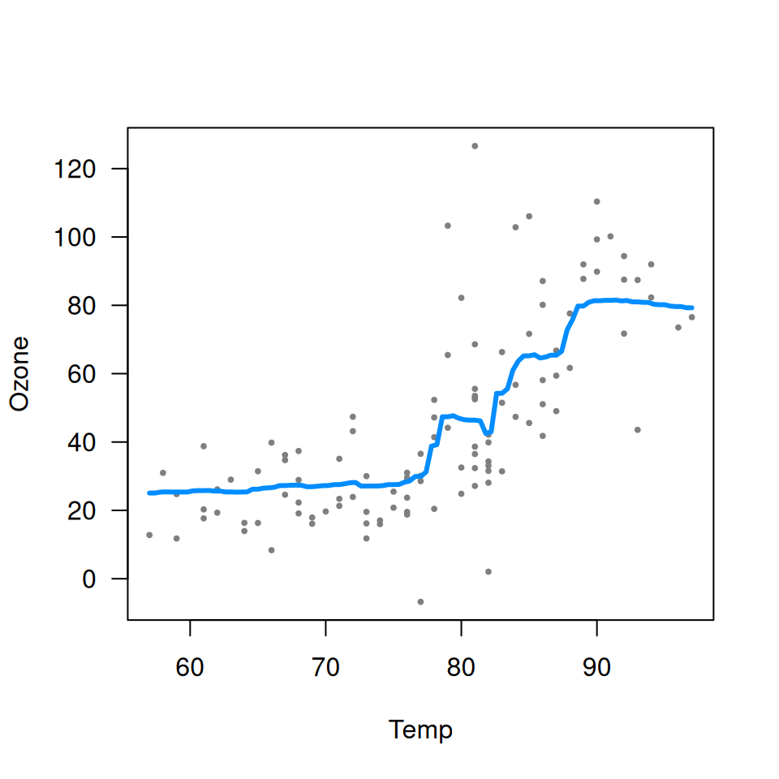
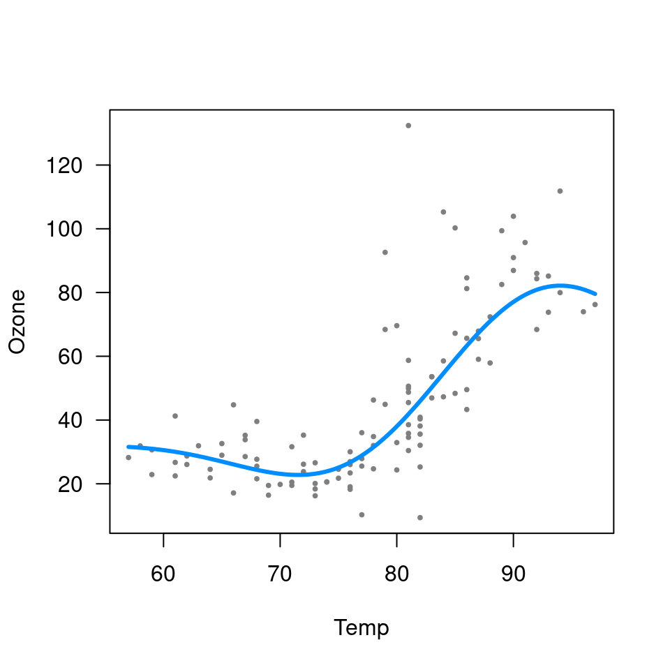
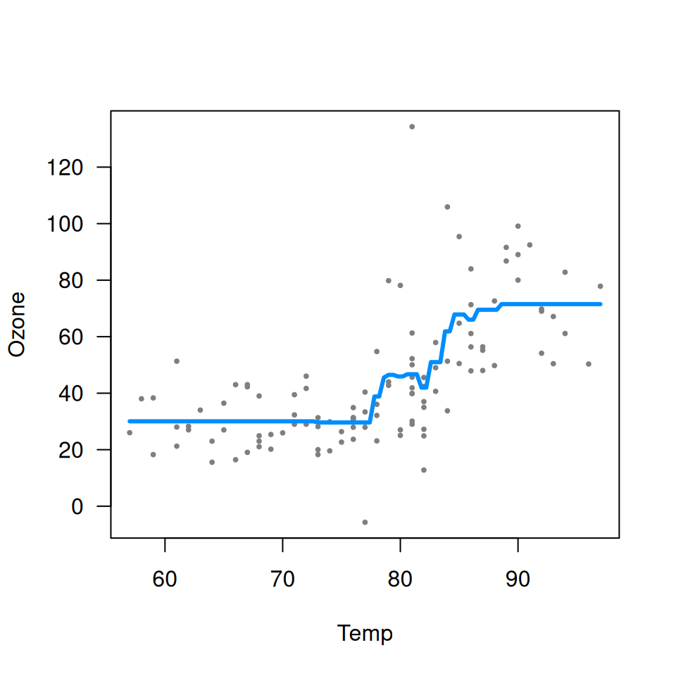
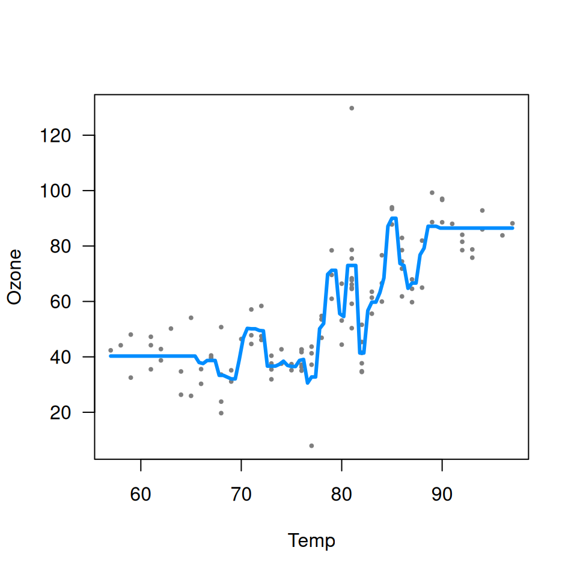

As the name implies, visreg is primarily designed to visualize regression models. However, it is also compatible with any formula-based model class that supplies a predict method, which includes models such as random forests and support vector machines. Such methods are often thought of as `black boxes'', butvisreg` offers a convenient way to visualize the resulting fit and possibly gain some insight into the model. Some of these packages do not automatically handle missing data, so we first create a complete-case data set:
aq <- na.omit(airquality)Random forests
library(randomForest, quietly=TRUE)
fit <- randomForest(Ozone ~ Solar.R + Wind + Temp, data=aq)
visreg(fit, "Temp", ylab="Ozone")
Support vector machines

Note that neither random forests nor support vector machines are able to provide confidence bands for fitted values, so no shaded bands appear.
Gradient boosted trees
The implementation of gradient boosted trees in the gbm package does not offer a residuals method. This would normally cause visreg to omit plotting the partial residuals. However, we can supply our own user-defined residuals method:
residuals.gbm <- function(fit) {fit$data$y - fit$fit}This is useful to be aware of in general: if you are ever working with a model class that does not provide a residuals method or a predict method, you can always write your own.
Once defined, we
library(gbm)
fit <- gbm(Ozone ~ Solar.R + Wind + Temp, data=aq, distribution="gaussian")
visreg(fit, "Temp", ylab="Ozone")
Note that the default settings for gbm do not produce a very good fit here. In particular, the default number of trees (100) is too low to capture the relationship between temperature and ozone. By increasing the number of trees, we obtain a much more reasonable fit:
fit <- gbm(Ozone ~ Solar.R + Wind + Temp, data=aq, distribution="gaussian", n.trees=5000)
visreg(fit, "Temp", ylab="Ozone")
This is a nice illustration of how visualizing a “black box” method using visreg can provide insight into setting some of the tuning parameters of these methods.